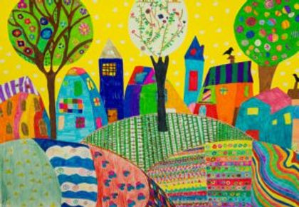

Un petit poisson rouge tournait en rond dans son bocal, il s'amusait à regarder passer les passants, les oiseaux, les chiens, les chats et surtout Mme Dubois sa maîtresse, la concierge qui lui disait tous les matins Alors Hercule ça va ça vient ! Et elle riait… hercule aimait beaucoup Mme Dubois elle était très gentille avec lui mais il s'ennuyait tellement… Alors comme elle ne comprenait pas il eut une idée plutôt sympa. Je vais lui apprendre le langage bulle se dit-il et cette idée le mit tellement en joie qu'il fit au moins quarante fois le tour de son bocal à toute vitesse en riant Ensuite, il décida de tomber malade pour que Mme Dubois lui posent des questions. Il alla se cacher derrière l'unique petit rocher poser dans son bocal. Il y resta au moins trois heures à dormir avant que Mme Dubois, inquiète, viennent voir ce qu'il se passe. Alors ça ne va pas mon hercule ? A cette première question, il répondit par deux bulles ce qui voulait dire non tu t'ennuies ? Oui, répondit hercule avec une bulle. Mme Dubois qui aimait beaucoup les poissons et surtout son hercule, comprenait de mieux en mieux à mesure que le temps passait le langage bulle. Et un jour elle dit tout simplement et faire un tour dans la rivière ça te dirais ? Une énorme bulle projetée de la gueule d'hercule fit comprendre bien mieux qu'un long discours que celui –ci rêvait de changer d'eau comme d'autres changent d'air. Alors le matin du lendemain, Mme Dubois a mis Hercule et son bocal dans un sac à dos transparent pour qu'il puisse profiter du paysage et la grand-mère et son poisson marchèrent marchèrent, marchèrent… Enfin la rivière dit la grand-mère… J'ai aussi emmené une épuisette pour te repêcher quand tu seras fatigué, fait attention à toi ! Et elle vida le bocal dans l'eau claire. Hercule adora tout de suite la rivière. Il y avait des courants, ça c'était plus marrant, il fit des cabrioles, plongea tout au fond, rencontra des poissons, parla de son histoire et de Mme Dubois. Tout le monde l'écoutait médusé c'est-à-dire très intéressé Attention dit une écrevisse sauve toi Hercule ! Deux énormes poissons avalaient tout sur leur passage. Notre héros réussi de justesse à plonger derrière un rocher. Ouf ! J'en ai froid dans le dos, j'ai les arêtes qui jouent des castagnettes. Alors il s'aperçut que c'était dur la vie sauvage dans la rivière, il fallait chercher tout seul sa nourriture et faire attention de ne pas se faire manger par les gros poissons. C'est bien la liberté mais c'est dur à supporter et peut-être que je ne suis pas fait pour ça se dit-il tout bas… Alors plus heureux qu'avant, il remonta le courant, sauta dans l'épuisette et se retrouva dans son bocal. Depuis ce jour, hercule n'a plus envie d'aller dans la rivière ou alors seulement de temps en temps, comme un voyage, un passe-temps une distraction, mais après qu'est-ce que c'est bon de retrouver sa maison.
M
r
K
l
ü
c
K
Raconteur de chansons
M
r
K
l
ü
c
K
Il était une fois, une île... Au milieu de la mer, avec une toute petite ville, et beaucoup, beaucoup de terres.
Pascal Guillaume est un artiste qui associe la chanson, la voix aux contes, aux histoires, à la poésie en y ajoutant une touche enfantine empreinte d'humour et de bonne humeur
Ce spectacle musical est sous la forme d'un concert dynamique et participatif.
Les thèmes choisis par l'artiste déterminent le fil rouge du spectacle dans des ambiances naturelles hautes en couleurs.
L'univers des chansons offre aux enfants, des valeurs universelles (solidarité, camaraderie, dépassement et estime de soi...).
Les chansons de
Monsieur Klück
Les chansons de Monsieur Klück sont toutes, des créations originales.
Les paroles, les mélodies et les univers musicaux ont été conçus par Pascal Iochum, le créateur et l'interprète de Monsieur Klück.
Les arrangements et les orchestrations des chansons sont signés Vincent Bilon.
Chut ! On écoute...
Les histoires à conter
de Monsieur Klück
Les histoires de Monsieur Klück sont des contes originaux qui transportent les enfants dans des univers magiques.
Infos
L'histoire de Mr Klück est terminée, ce fut un grand plaisir de partager tous ces moments !
Merci à tous les enfants qui m'ont accueilli chaleureusement !
GROS BISOUS !
Pour vous replonger dans l'univers des spectacles de Monsieur Klück, n'hésitez pas à consulter leur documentation.